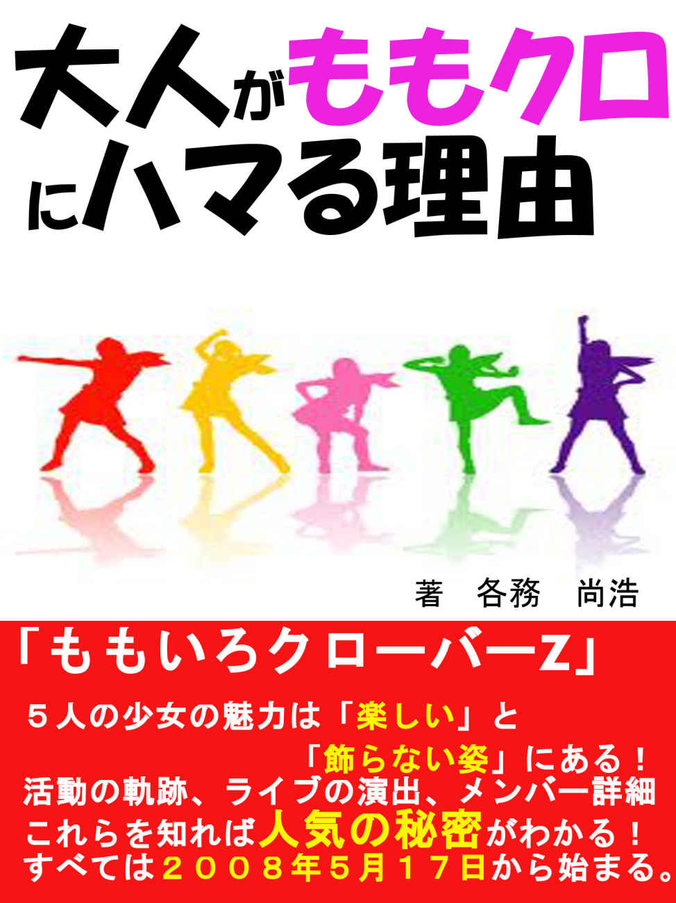

| 大人がももクロにハマる理由 | |
| 各務尚浩 | |
| (2014) | |

※ 本書は非公式のももクロファンブックです。株式会社スターダストプロモーション、並びに関係者とは、一切関係はございません。
『大人がももクロにハマる理由』を購入していただきありがとうございます。
著者の各務尚浩（かがみなおひろ）です。簡単に僕の自己紹介をさせていただきます。10
月17
日生まれの23
才です。普段は仕事をする傍ら、休みの日はももクロのＤＶＤを観たり、ドライブに出かける事を中心に過ごしています。
ももクロが好きな方といろいろなかたちで交流ができたら嬉しいです。知りたい事がある方や本書に共感してくださった方はお気軽に連絡をして頂けると嬉しいです。連絡先は本書の最後に書いてあります。私は「あーりん推し」です。みなさんは誰推しですか？
好きな曲は「ＤＮＡ狂詩曲」です。すごくかっこいい曲なので是非聴いてみてください。
「ももいろクローバーＺ」今や老若男女問わず大人気な彼女達。そんな彼女達に魅了されモノノフ（ももクロのファン）になった方も多いのではないかと思います。私もその一人。私がモノノフになったのは２年程前の事。知り合いに、ももクロが大好きな男性がいまして、その男性からももクロのライブＤＶＤを見ながら踊ったり話をしたりして楽しむ「ももクロオフ会」に誘われ参加したのがきっかけ。
その時はももクロの事はメンバーの名前くらいしか知らない頃でしたが、いろいろな人と交流ができるいい機会だと思ったので参加を決めました。ももクロの事をあまり知らなかった私ですが、ＤＶＤを見ていても飽きないというか見ているうちにだんだん入り込んでしまって気が付いたら４時間近く時間が経っていました。正直自分でびっくりしました。ももクロの事をあまり知らない人が見ても楽しませてくれるももクロってすごいと心から思ったのです。
この事をきっかけにももクロの事が気になり２０１１年７月27
日に発売されたアルバム「バトル アンド ロマンス」を聴いたのですが、すごいテンションが上がる曲が多くて聴いていて元気がもらえるし、もっと違う曲も聴いてみたいと思い曲を聴いているうちにだんだんももクロが好きになっていきました。
２０１４年３月15
・16
日には彼女達の夢だった国立競技場でのライブを成功させました。私はライブを名古屋のライブ・ビューイングで見ていました。ライブの途中で、ももクロの過去の映像がながれてそれを見て感動したので、ももクロの今までの活動と魅力をももクロに興味がある方やももクロについてもっと知りたいと思っている方に伝えたいと思いました。もちろん全国のモノノフの皆さんにも読んでいただけると嬉しいです。
それでは、ももいろクローバーＺの軌跡と魅力についてみていきましょう。
今やももいろクローバーＺにハマる人は数多くいる。子供（チビノフ）から60
代の大人まで幅広い。そこで私は思った。「なぜ大人もももクロにハマるのか」と。「どんなところに魅力を感じファンになるのか」と。
芸能人の方にももクロのファンはたくさんいる。特にお笑い芸人が多い。例えば金田哲さん（はんにゃ）、塚地武雅さん（ドランクドラゴン）、設楽統さん（バナナマン）、山里亮太さん（南海キャンディーズ）など。その他にも綾小路翔さん（気志團）、田中将大さん（ニューヨーク・ヤンキース）、南明奈さん、三宅正治さん（フジテレビアナウンサー）、miwaさんなど幅広い方に人気だ。ももクロの人気の秘密はどこにあるのだろうか。ファンの方の約90
％
が口にするキーワードは「一生懸命」
だ。
皆さんももクロの一生懸命な姿勢に惹かれるようです。もちろん私もそうです。そして「見ていて楽しい」
からではないかと思います。
ももクロの一生懸命さが近くで見られるのはなんといってもライブ
。リハの様子を紹介しよう。ももクロはリハーサルでも決して手を抜いたりしない。リハーサルであっても「口パク」
はしない。１曲１曲を歌って踊るのだ。１時間近くノンストップで行う事も。ライブには場面転換がある。リハーサルでは場面転換も飛ばさずに行う。
本番ではこの間に衣装チェンジがあるがリハ―サルでは行わないため、一息つける時間だがメンバーは休まずに次の動きを確認して再び練習に向かう。リハーサルが終わってもみんなができるようになるまで自主練習を行います。
わずかな乱れがライブを台無しにしてしまうからだ
。プロですね。リハーサルでもライブ本番でも決してつらい顔をせず、笑顔で楽しそうにパフォーマンスをするところが本当にすごいとおもいます。全力で満面の笑みで歌って踊る姿を見て観客も「見ていて楽しい」
と感じるのではないでしょうか。メンバー５人が仲良くふざけている姿をみているとこっちも楽しくなる。「楽しい」
というのも、ももクロの魅力なのです。
私たちが知らないところでも、ももクロの５人は努力している。だからこそ観客の皆さんが楽しめて「また行きたい」
と思わせてくれるライブができるのだと思います。本当にももクロには感謝です。ライブに来てよかったと思わせてくれるし元気をもらえます。
そんなももクロをみて私は「自分も頑張ろう！」と思わせてくれたり、「何事にも全力で取り組めば必ずいい結果が出る」と信じてみるきっかけになったりと、自分をプラスに考えさせてくれる存在になっています。本当に私にとってももクロの存在は大きいのです。
１つライブ中に起きた有名な出来事がある。ライブで「オレンジノート」を披露中に機械が故障してしまい音楽がストップしてしまう。ももクロは少し戸惑いを見せたがアカペラで歌を歌い続けた
。この様子は動画にもアップされている。
何回も動画を見ているが何回見ても泣けます。ももクロだから歌い続ける事ができたのではないかと思います。
他のアイドルにはまねできないことではないでしょうか。プロ意識の高さと一生懸命さが伝わってきますね。ももクロから学ぶことはたくさんあるので、私はももクロを「生きる教科書」
と言っても過言ではないと思います。
その他にも東日本大震災の被害にあった宮城県女川市に訪問してサプライズでライブを行ったり、「みちのくSL
ギャラクシー」の車内でライブを行うなど現地の方と触れ合う事も大切にしている。「みちのくSL
ギャラクシー」では車内だけでなく、お客さんが車内から楽しめるようにと、外にセットされたステージで「仮想ディストピア」「ツヨクツヨク」の２曲を披露した。
この日、外の気温はマイナス３度
。しかしももクロは着ていたコートを脱いでノースリーブの衣装でライブをおこなった
。
こういう「本気」
で取り組むところに胸を打たれます。国立競技場でのライブを控えていた時期にも関らず風邪をひくかもしれないのにコートを脱いでお客さんのために全力でライブをするももクロすごい！！
もう「すごい」
の一言。お客さんの事もちゃんと考えてくれているところも魅力的です。
ももクロの魅力をみていただきましたがももクロの「一生懸命」さ
が伝わったでしょうか。大人もハマるのも納得できると思います。一生懸命で全力なももいろクローバーＺから目が離せない！これからも魅力的なグループであり続けてほしいです。
「世界のももクロ ナンバーワン！」
次の章では、メンバーの詳細をご紹介します！
◆書籍購入者限定◆
ももクロの事をもっと知りたい方、ももクロトークをしたい方、ももクロ好きな友達がほしいと思っている方とお話ができる場を設けさせていただこうと思います。 ももクロに関することなら何でも構いません。連絡先を載せておきますのでぜひ連絡をください。
LINE kara.onepiece
facebook
mixi「かがみん」または「各務 尚浩」で検索してみてください。
よろしくお願いします。
ももクロの事を知るには、やはりメンバーの事を知って欲しい！
ということで、まずはももクロのメンバー紹介をします。
ただ、普通の紹介ではなく、私が知っている特徴を加える事で、メンバー１人１人の個性を知っていただけたら、嬉しいです。
・百田 夏菜子
１９９４年７月12
日生まれ。静岡県出身。イメージカラーは赤
。愛称は「かなこ←←」
。血液型はAB
型。
特技は新体操。この特技を活かしてライブなどでアクロバティックなダンス
を魅せる。ももいろクローバーの結成に参加している。２００８年11
月頃に２代目のリーダーとして活動している。キャッチフレーズは静岡県出身のため「茶畑のシンデレラ」
。運動能力が高く、「行くぜ！怪盗少女」の曲中で行う「エビぞりジャンプ」
が名物になっている。
かなこの自己紹介・・・
はちはちはちはち でこっぱち～
茶畑のシンデレラといえば？
（かなこ←←）えくぼは恋の落とし穴！
百田夏菜子です。
夏菜子の魅力は元気なところと運動能力が高くライブなどでアクロバティックなダンスでお客さんを楽しませてくれるところだと私は思います。バラエティ番組やライブのMC
などで魅せるちょっとおバカな一面もかわいいですよね。
「ももクロ夏のバカ騒ぎ WORLDSUMMERDIVE２０１３.８.４日産スタジアム大会」のMC
中に「見て～」と上を指差した夏菜子。観客が空を見上げると「バカが見る～」とおどけてみせた。こんなお茶目な一面もある夏菜子。この瞬間みんなが笑顔になった。
さすがリーダーだと私は思いました。ももクロのリーダーとしてももクロを引っ張っていくしっかりした一面とちょっとおバカな一面をもつのが夏菜子の魅力なのではないかと思います。これからもももクロのリーダーとしてメンバーを引っ張っていってほしいですね。ライブでのパフォーマンスにも期待です。
・玉井 詩織
１９９５年６月４日生まれ。神奈川県出身。イメージカラーは黄色
。愛称は「しおりん」
。キャッチフレーズは「みんなの妹」
。血液型はＡ型。
小学生の時に現在の事務所スターダストプロモーションにスカウトされ、ももクロ結成当時から妹的存在として活躍している。特技は遠くから投げられるマシュマロを口でキャッチすること。ライブでは「いいかお前ら～！」
と煽りを担当する事が多い。
ツインテールがトレードマークだったが「サマーダイブ２０１１～極楽門からこんにちは～」からショートヘアにしている。
しおりんの自己紹介・・・
しおりんのあいうえお作文！（いえ～い）
（しおりんのし～）叱らないで～
（しおりんのお～）怒らないで～
（しおりんのり～）リズムにのって～
（しおりんの・・・んー？）んー・・・
今日も一緒にレッツももクロちゃん！
泣き虫で甘えん坊なみんなの妹、しおりんこと玉井詩織です。
しおりんといえばメンバーイチの食いしん坊。あるロケでわんこそばを93
杯食べているんです。すごいですね。しおりんは怖がりであり移動先のホテルなどでは一人で眠ることが苦手で夏菜子の部屋で寝る事もあるようです。この事はももたまい（百田夏菜子＆
玉井詩織）の「シングルベッドはせまいのです」という曲で歌われている。
この一面を聞くとまさに「みんなの妹」ですね。ライブのパフォーマンスで共演者にビンタする事もある。このギャップがまたいいですね。これからも「みんなの妹」でいてほしいと思います。
・佐々木 彩夏
１９９６年６月11
日生まれ。神奈川県出身。イメージカラーはピンク
。愛称は「あーりん」
。キャッチフレーズは「ちょっぴりセクシーでおちゃめな、ももクロのアイドル」
。血液型はAB
型。
小学１年生の時にスカウトされ芸能界に入り、小学５年生の時に現在の事務所であるスターダストプロモーションに移籍する。趣味は半身浴、おしゃれ、かわいい物を集めることなど。趣味を見るとアイドルとしてのポテンシャルが高い事が分かりますね。特技は本の読み語り、スキー、人形と話をする事。「人形と話をする事」というのは「あーりん」らしさが出ています。
まさに「ももクロのアイドル」
あーりんの自己紹介・・・
お肌のお手入れ（キュキュッキュキュー）
あーりんのほっぺは（プニップニー）
プニップニ？ピチッピチでしょ！（ピチッピチー）
ちょっぴりセクシーでお茶目なももクロのアイドル、あーりんこと佐々木彩夏です。
あーりんは「箱入りあーりん」と言われることがある。その理由として、あーりんの母が「友達とカラオケに行くこと」、「プリクラを撮ること」、「漫画を読むこと」、「火や包丁を使って料理をすること」などを禁止している（いた）から。親から大事に思われている証拠ですね。私も気持ちが分かります。危ないことはやらせたくないですからね。
ライブではMC
を担当しており、レッスンではダンスリーダーを担当している。
グループ加入当時は変顔をしたり、振り付けで「コマネチ」をしたりすることに抵抗があり「やりたくない」と号泣したこともある。今の姿を見ると、その壁を乗り越え克服したあーりんってすごいと思うし、プロだなと思います。
これからも、いろいろな壁があると思いますが頑張って乗り越えていってほしいです。私は応援したいと思っています。頑張れ「あーりん」！！
・有安 杏果
１９９５年３月15
日生まれ。埼玉県出身。（東京都と表記される場合もある。）イメージカラーは緑
。愛称は「ももか」。
キャッチフレーズは「ちょっぴりおばかな、小さな巨人」
。小さな巨人というのは小柄・軽量なのに優れた人を称える言葉。血液型はA型。メンバーの中では歌とダンスが一番得意。
中学２年生の時にスカウトされてスターダストプロモーションに入る。２００９年７月ももいろクローバーに参加。趣味は音楽鑑賞、お風呂で歌うこと、料理。趣味を見ると「音楽鑑賞」と「お風呂で歌うこと」が音楽に関連していることが分かる。音楽が好きな事が伝わってきます。特技はムーンウォーク、パントマイムなど。特技は体を使う事ですね。ダンスが得意だからこそできる特技なのではないでしょうか。
ももかの自己紹介・・・
ちっちゃいけれど元気な（ありゃーす）
ちょっぴりおばかなももかで（ありゃーす）
最後はみんなで一緒に （ありゃーす）
ちょっぴりおばかな小さな巨人、有安杏果です。
杏果のイメージカラーと言えば緑。しかし杏果は緑色の生き物が苦手なこともあり嫌いな色だったが、ももクロの活動をしている内に愛着がわくようになったようです。ももクロの緑といえば杏果ですよね！緑色に愛着がわくようになってよかった。
杏果はちょっぴり滑舌が悪いのも印象的。そこがまたかわいいですけどね。早口言葉が苦手で中々上手に言えないようです。
そして自転車に乗るのも苦手。17
歳になって初めて自転車に乗ることができるようになった。西武ドームのライブでは杏果が自転車に乗り、スタンド席を走り抜け、観客の近くまで移動する演出も行われている。努力したからこそできることですね。杏果すごいぞ！！
努力することは無駄じゃないということを思わせてくれますね。素晴らしい！
一番背が低いけどとても魅力がある杏果。これからも素敵な歌とダンスをみせてくれ！
・高城 れに
１９９３年６月21
日生まれ。神奈川県出身。イメージカラーは紫
。愛称は「れにちゃん」
。キャッチフレーズは「ももクロの感電少女」
。激情的なダンスと不思議ちゃんキャラが特徴。血液型はＯ型。
中学２年生の時にスカウトされて事務所に入る。２００８年、ももいろクローバー結成から参加。２０１１年春から、仕事１本の「毎日ヒロイン」に。
趣味は異次元について考えること。まさに不思議ちゃんです。れにちゃんらしいといえばれにちゃんらしいですね。
特技は幽体離脱。ももクロの楽曲「もリフだョ！全員集合」では、れにちゃんのパートで「幽体離脱が得意です。宇宙も見た事あるんだよ。」という歌詞がある。
曲の歌詞にするくらいなのだから本当の特技なのだろう。
「ももクロＣｈａｎ」で放送されていた「ぶらり高城れに」見ていました。れにちゃんの個性が出ていてすごいいい企画だなと思います。タコイエロー（しおりん）とのコンビネーションもぴったりでしたね。また見たいですね！
れにちゃんの自己紹介・・・
れにれに体操第一いくぞー！（オー！）
右手をあげて～！左右にふって～！
今日も愉快にいっちゃうよ！
いつものんびり（高城れに！）
あなたの後ろに（高城れに！）
一家に一台 （高城れに！）
そんな私は （高城れに！）
ももクロの感電少女、高城れにです。
れにちゃんの魅力はやっぱり「笑顔」
ではないでしょうか。ライブでのかけ声（れにちゃんの決めコール）は「笑顔が一番！れにちゃん！」。ライブでのコールに使用されるくらいいい笑顔を私達に見せてくれるのがれにちゃんの一つの魅力だと思いますね。
こんなにこのコールが似合うアイドルはいないのではないだろうか。
そして、忘れてはいけないのが「変顔」
ですね。「馬」や「深海魚」などがある。テレビに出演している時などに変顔を得意としているため披露される事がある。見てみると本当にすごい！アイドルなのに全力で変顔をしているれにちゃんに脱帽だ。他のアイドルには中々できないとおもいますね。
そんな、れにちゃんライブを見れば分かりますがダンスがキレキレ。ももクロのリーダーが、れにちゃんから現リーダーの夏菜子に交代した時に、このままももクロをクビになると思ったらしく落ち込んだようです。ですが彼女は諦めず、今より自分のパフォ―マンスレベルを上げようと努力をしたんです。
その結果ももクロでダンスが得意な杏果に「れににダンスで勝つのは難しい」
と言われるほどの実力を身につけたのです。キレキレなダンスは努力の結晶なんですね。感動しますね。
これからもももクロの最年長メンバーとして活躍してほしいですね。
以上が今会えるアイドル週末ヒロインももいろクローバーＺ
のメンバーとプロフィールです。
ひとりひとり魅力的ですね。元々はメンバーのプロフィールにダンスが得意と書いてあったため集められ、結成されたのがももいろクローバー。そんな彼女達がいろいろな困難を乗り越え、いろいろな事を経験して今現在日本を代表する女性アイドルグループと言っても過言ではないくらいの存在に成長したのです。それってすごい事だと思いませんか？
ももクロには本当に感動させられます。
そんな彼女達の軌跡を年代別に順をおって見ていきましょう。
あなたは、ももクロには最後の『Ｚ』がついていない時代があった事をご存じでしたか？
知っていた方、ももクロ好きな方ですね、さすがです！
知らなかった方は、これから知っていただければ大丈夫です。
ただ、ももいろクローバーに『Ｚ』がつくまでの経緯、デビューから有名になるまでどういった活動をされているか、明確に知っている方は少ないはずです。
そこで、本書でこの部分を軌跡としてお伝えしていきます！
ももクロのスタート、活動の１つ１つにドラマがあります。
これを知れば、ももクロの人気の秘密がご理解いただけます！
それでは、活動スタートとなる、２００８年から順にお話していきますね。
◆２００８年
・５月17
日
川崎アゼリアで行われた「スターダスト芸能３部オーディション」の中で初めてイベントを開催。当時のメンバーであった高城れに、玉井詩織、百田夏菜子、高井つき奈、伊倉愛美、和川未優の６人で「あの空へ向かって」を披露する。この日を結成日とした。
・７月～９月
渋谷代々木公園けやき通りで週末に路上ライブを続けた。写真や動画撮影を許可しており、アイドルとしては異例の対応だった。同年の夏に同所でのアンブの使用が禁止になったため、場所を移すこととなった。
・10
月～２００９年１月
飯田橋の駅ビル・飯田橋セントラルプラザラムラを新たな拠点としてライブ活動を行う。
・11
月23
日
飯田橋セントラルプラザラムラのライブで、柏幸奈、早見あかり、佐々木彩夏の３人が新たに加入して９人体制になる。メンバーは高城れに、玉井詩織、百田夏菜子、佐々木彩夏、早見あかり、和川未優、伊倉愛美、藤白すみれ、柏幸奈。
・12
月24
日
「中島愛クリスマスイベント２００８」に出演。
・12
月29
日
原宿アストロホールにて、事務所主催の『３－
Ｂ Jr LIVE「年末だヨ！全員集合」』が開催される。このイベント限定で「あの空へ向かって」「ラフスタイル」「MILKY WAY」の３曲が収録された「３－
B Ｊｒ ぷちアルバム」が発売される。
この頃、メンバーの和川未優、伊倉愛美、藤白すみれ、の３人が脱退。
高城れに、玉井詩織、百田夏菜子、佐々木彩夏、早見あかり、柏幸奈の６人となる。
２００８年の活動を振り返るとメンバーの脱退と加入がそれぞれ１回ずつありますね。
アイドルを続けていくのは相当大変な事なのでしょう。イベントやライブ活動も積極的に行っていますね。この頃からファンという方も多いのではないでしょう。
◆２００９年
・１月４日
秋葉原石丸電気にて「スタ☆
フェスvol
001
」を開催
・３月９日
柏幸奈が脱退し、高城れに、玉井詩織、百田夏菜子、佐々木彩夏、早見あかりの５人となる。
・５月２日
バシフィコ横浜で開催されたヤマダ電機家電フェアにて７月22
日にCD
デビューすることが発表された。
・５月17
日
秋葉原石丸電気で、ももいろクローバー１st Anniversaryイベント「１周年だョ！全員集合」、ももいろクローバー１st Anniversaryライブ「ももクロちゃんは止まらない！」Let's run up together！」開催。
・５月24
日～８月16
日
「ヤマダ電機Presents ～ももいろクローバーJAPANツアー２００９ももいろTyphooooon！～」を開催。夏休み期間中はワゴンで車中泊をしながら全国を回った。８月13
日の川崎店外では、照明設備がないまま日没を迎えたが、車のヘッドライトで照らしながらライブが行われた。このツアーは24
店舗104
公演行った。
百田夏菜子はずっと家に帰れなかった。この時期をももいろクローバーで１番つらい時期だったと語っている。
・７月24
日
「第14
回新橋こいち祭」でTHE
ポッシボーらと共演する。直前のイベントではMC
が「絶対に負けられない戦い」と煽る。
この頃、早見あかりの自己紹介が「ももクロのMEGA」から「ももクロのクールビューティー」に変わった。
・７月26
日
石丸電気で開催された「スタ☆
フェスvol006
」で新メンバーの有安杏果の加入が発表され、メンバーは高城れに、玉井詩織、百田夏菜子、佐々木彩夏、早見あかり、有安杏果の６人となる。
・８月４日
SHIBUYA BOXXで開催された「スタ☆
フェス番外編vol ２」で「ツヨクツヨク」と「words of the mind」が初披露される。早見あかりのラップがももクロの楽曲の定番に。
このイベントに向けては早見あかりから重大発表があると事前に告知がされていた。ここで発表されるのではという噂がファンの間に広がっていたが「ラップを始めました」というのが重大発表と聞き拍子抜け。イベント後には有安杏果の加入に納得がいかないファンからの抗議があった。
・８月５日
インディーズデビューシングル「ももいろパンチ」
がリリース。
オリコンデイリー11
位を記録した。当時、まだ加入したばかりだった有安杏果は「私は入ったばかりの新メンバーでこの結果はみんなが頑張ってくれた結果だから100
％
は喜べない。これから私が入ってみんなで頑張って結果を出したい」と心境を語っている。
この杏果のコメント素晴らしい！「みんなが頑張ってくれたからこの結果が出せた。これからは私も一緒に頑張って結果を出したい」。謙虚な姿勢とこれから頑張るんだという気持ちが伝わってきます。私も見習いたいと思います。頑張れ杏果!!
・９月19
日～23
日
秋葉原UDX
シアターにて「ももいろクローバーCHAMPION CARNIVAL AKBA ５DAYS」を開催。朝10
時から夜８時まで毎日有料ライブを３回、無料イベントを３回の計６公演を５日間続けて行い、入場料１０００円、固定席172
席のシアターが最終日最終公演まで初めて満席に。
メンバーのイメージカラーが打ち出されたのは、このライブで「未来へススメ！」の衣装を初披露してからだ。
初めて満席になったライブだったということでメンバーは号泣、お客さんももらい泣き。
ももクロも嬉しかったと思いますが、自分たちのために泣いてくれるお客さんがいることはもっと嬉しかったのではないでしょうか。なんだか私も嬉しくなります。ももクロ本当におめでとう。
・11
月11
日
インディーズ２ｎｄシングル「未来へススメ！」
をリリース。
「未来へススメ！」はオリコンデイリー６位を記録。百田夏菜子は「デビューシングルの時は11
位で惜しくも10
位以内に入れなくて、セカンドシングルは６位で５位以内に入れなくて。だから神様って次の目標を私達に与えてくれてるんだなって。
だからどんどん神様に与えられたものをクリアしながらみんなで頑張りたいと思います。」とコメントしている。
夏菜子のコメント素晴らしいですね。尊敬します。前向きなコメント私にはできないと思うし簡単には言えない言葉だと思います。
「これからも頑張っていく」という強い気持ちと向上心があるからこそ言える言葉ではないでしょうか。
◆２０１０年
・３月３日
明治記念館にファンを招待して公開調印式が行われる。ユニバーサルJからメジャーデビューすることが発表される。この中で百田夏菜子は、オリコン１位をとって紅白歌合戦に出場することと、武道館公演を行い来てくれたファン全員と握手をすることを今後の目標と語っている。
・３月６日～５月10
日
ユニバーサルＪからのメジャーデビューシングルである「行くぜっ！怪盗少女」の発売に向けて「ももいろクローバー・メジャーツアー２０１０ 春の最強タッグ決定戦～炎の約28
番勝負～」が開催される。他のアイドルグループのファンの方にも足を運んでもらえるようにと秋葉原を中心に行われた。
・５月５日
メジャーデビューシングル「行くぜっ！怪盗少女」
をリリース。ファンの前でオリコンデイリーランキングを発表。見事１
位を獲得。
UDX
シアターで行われたのだが、入場は抽選でロビーの外にも入れなかったファンが多数いた。その時ままクロちゃん（ももクロメンバーの母親たち）が「ファンの人を１人でも多く入れてあげてください。私たちは外で見ます。」と言ってくださった。
メジャーデビューシングル「行くぜっ！怪盗少女」。１位獲得おめでとう。この曲大好きなんですよね。カラオケに行くとよく歌っています。盛り上がるのでこの曲はいいですよ！おすすめです！
ままクロちゃんも優しいですね。なんて良い方なのでしょうか。ファンの皆さんの事を大切に思ってくださっているのでしょう。泣けてきますね。とても素敵な親に育てられて、今の心優しくファンの事を考えくれているももクロが存在しているのですね。感謝です。これからも両親の事を大切にそして仲良く暮らしていってほしいと心から思います。
・５月30
日
NHK
「MUSIC JAPAN」に出演。グループの存在を知られるきっかけとなった。「アイドル戦国時代」
の幕開けと言われる。
・８月23
日
スターチャイルドへの移籍と、11
月10
日に新曲「ピンキージョーンズ」をリリースすることが発表される。
・９月19
日～11
月23
日
「ももいろクローバーセカンドデビューツアー秋の陣～天下を獲りにいくぜっっ！！～」を開催。「ピンキージョーンズ」のリリースツアー。ららぽーと柏の葉から代々木公園までの全37
回の公演を行い、最終日の公演には約３０００人のファンが集まった。
・11
月10
日
２ｎｄシングル「ピンキージョーンズ」
をリリース。
オリコンデイリーランキング６位。
・12
月12
日
立川市・フロム中武屋上で「今年のラストは全員集合！～DD
大歓迎 でた、三大分身の術の巻～」を開催。
当日早朝７時のチケット販売開始２時間程前から列ができた。
・12
月24
日
日本青年館で初単独となるホールコンサート「ももいろクリスマスin日本青年館～脱皮；DAPPI～」
を開催。
その後続く「ももクリ」
のはじまりとなった。チケットは一般発売開始から約30
分で完売となった。２０１１年３月９日に新曲「ミライボウル」を発売することと、４月10
日に東京・中野サンプラザでコンサートを開催することを発表した。
シングル「きみゆき」が会場で限定発売される。
◆２０１１年（４月10
日まで）
・１月10
日～３月21
日
「ももクロ新春スペクタクルツアーミライボウルがやってきた」を開催。
１月16
日にららぽーと柏の葉公演で、早見あかりが４月10
日の中野サンプラザ公演をもってももいろクローバーを脱退することが発表された。
脱退する事を決めた理由は「ももクロでの自身の存在意義やアイドルとしての適性について悩み続けた末、元々目指していた女優の道に進もう」と決意したためだ。
・３月９日
３ｒｄシングル「ミライボウル/Chai Maxx」
をリリース。
オリコンデイリー３
位を記録。
百田夏菜子は「このミライボウルツアーが６人最後のツアーって知った時に、最初は楽しめるのかなって不安もあったんですけど。でもあかりんと２人でいろいろ話して『とにかく楽しもう！』
っていう結果で終わったんですよ。
この６人で最後のCD
なので、ほんとにこの３位って結果はあかりんの頭には絶対残ったと思うし、でもまだツアーは終わってないので、もっともっと、あかりんの心に、皆さんの心に残るようなツアーにできたらいいなって思います。」とコメント。
６人での最後のシングルが見事３
位獲得。おめでとう！本当によかったです。夏菜子のコメントも素晴らしい！不安もあったけど「とにかく楽しもう」と決めたこと。あかりんの心にも、そしてファンのみんなの心に残るようなツアーにしようと決めたことも素晴らしいと思います。ファンの事を考えてくれていることが本当にももクロの素晴らしいところだと思いますね。
・４月10
日
「４．10
中野サンプラザ大会ももクロ春の一大事～眩しさの中に君がいた～」
を開催。６人体制では最後のコンサートだ。・第１部「ももクロ☆
オールスターズ２０１１」。
第２部「早見あかりFINALそして・・・」
の２部に分けて行われた。
４４００席のチケットは両部とも発売開始から数分で完売となった。
第２部では「あかりんへ贈る歌」
が披露された。メンバーが泣きながら歌っている姿をみるとこっちも泣きそうになります。
そして第２部終了後には、グループ名が「ももいろクローバー」から「ももいろクローバーＺ」
に改名することが、彼女達も事前に知らされないままサプライズで発表された。
ここから「ももいろクローバーＺ」
としての伝説が幕を開ける。
あかりんは、脱退後もももクロと交流しており、女優としてもドラマに出演している。２０１３年日本テレビの「斉藤さん２」に出演していたのが記憶に新しい。
さぁここまで「ももいろクローバー」の活動をみてきました。ここまでみてどう感じていますか？ももクロのこともっと知りたいと思って頂けたら嬉しく思います。
ぜひ続きを読んで頂きたいです。お付き合いして頂けると幸いです。
それでは、第４章へ行きましょう！！
（２０１１年４月11
日～２０１４年３月 国立競技場ライブまで）
いよいよ、ももいろクローバーＺとなったわけですが、彼女達はしっかり下積みをしているからこそ、メジャーに出ても人気があり、謙虚であり、活躍を続ける事となります。
そして、定期的なイベントはもちろんかかさずやっています！
そんな少女達の伝説を、私と一緒に見ていきましょう！
◆２０１１年（４月11
日～）
・４月11
日～15
日
７日連続イベント「ももクロChan Presents ももいろクローバーＺ試練の七番勝負」
を行う。ゲストを招いてトークショーを行った。
・５月14
日
Ｚepp Sendai でフリーライブ「LIVE at 仙台強いニッポン、未来へススメ！」を開催。
コンセプトは「１人でも多くの東北地方の方々にライブを」
。
ここでは新曲となる「Ｚ伝説～終わりなき革命」を初披露した。
・５月20
日～７月３日
「ももいろクローバーＺ」に改名後、初ツアーとなる「ももクロファンタスティックツアー２０１１Ｚでいくって決めたんだＺ！！」を開催。
全日程のチケットが初めて完売となった。ファイナルとなったＺepp Tokyoでは２時間ライブ３公演、計64
曲を歌うというももクロにとって初の挑戦となった。
・７月６日
４ｔｈシングル「Ｚ伝説～終わりなき革命～」
と５ｔｈシングル「Ｄ'の純情」
を同時発売。
・７月27
日
１ｓｔアルバム 「バトル アンド ロマンス」
を発売。
選挙カーを模した車で都内を移動しながらももクロ本人が人々に購入を訴える演説を行った。
玉井詩織はアルバムがオリコン１位を獲得した時の公約として、「ご褒美に髪を切ります！」
と宣言。さらに１位を獲得できなかった時は「"これからがんばる！"の意味を込めて髪を切ります！」
と断髪を公約した。新宿ステーションスクエアで無料ゲリラライブを行った。約４０００人のファンが殺到。玉井詩織は「ここがアイドル界のど真ん中だ！」
と叫んだ。
・８月20
日
よみうりランドにて野外ライブ「サマーダイブ２０１１～極楽門からこんにちは～」
を開催。
玉井詩織は「バトル アンド ロマンス」発売時の公約通りショートカット姿で登場。12
月のさいたまスーパーアリーナ公演がサプライズ発表される。ライブが終わった後もアンコールの声が鳴りやまなかった。ももクロは「もう一回出たい」「歌えなくてもいいから出たい」
と言って涙を見せていた。しかし、時間の関係で出られなかったため夏菜子が「さいたまスーパーアリーナで会いましょう！」
とコメントを残して、ライブは終了した。
・10
月23
日
両国国技館で全日本プロレス「２０１１プロレスLOVE in両国vol,13
」に出演。グレート・ムタの弟子「グレートクローバーＺ」として参戦。「chai Maxx」を披露した。
・10
月30
日
渋谷O－
EASTで女性限定ライブ「ももクロ秋の２大祭りももクロ女祭り２０１１」
を開催。
３時間半という、ももクロ史上最長のステージとなった。
・11
月６日
品川ステラボールで男性限定ライブ「ももクロ秋の２大祭りももクロ男祭り２０１１」
を開催。男性限定という事もあり、放水や御輿などの演出が多くみられた。
・11
月23
日
勤労感謝の日に６thシングル「労働讃歌」を発売。
・12
月25
日
「ももいろクリスマス２０１１さいたまスーパーアリーナ大会」
を開催。会場でシングル「白い風」を限定発売。
◆ ２０１２年
・２月25
日
「モーレツ☆
大航海ツアー２０１２」
を開催。
２月25
日～３月11
日までの約２週間で、５公演を回るショートツアーだ。すべての会場が１日１公演で開催された。この１日１公演というのにはプロデューサーサイドの狙いで 「１回の公演と目の前のお客さんに真剣に、必死に挑んで集中できなければ、１万４０００人のお客さんが入る横浜アリーナでは、箱の大きさと大観衆に負けてしまう」
という課題が与えられたツアーだ。
・２月27
日
１ｓｔアルバム「バトル アンド ロマンス」が第４回CD
ショップ大賞の大賞に選ばれる。
・３月７日
７ｔｈシングル「猛烈宇宙交響曲・第七楽章「無限の愛」」
が発売。
ウィークリーチャートは５位を記録。
・４月４日
ロッテアイス「爽」の新CM
記者発表会を品川ステラボールで開催。サッカーの長友佑都選手
と共演。
CM
は長友選手がいるイタリアとももクロがいる日本で別撮りされたものを編集で合成したもの。
夏菜子だけはイタリアで行われた撮影のメイキングに同行していた事が発表され、メンバーからは「ずるい」と羨ましがったのだった。
・４月８日
ラジオ初の冠番組「ももクロくらぶxoxo」
が開始。メンバーが交代で出演する。
・４月14
日
夏菜子が「メレンゲの気持ち」
の新レギュラーに決定する。
・４月21
日・22
日
「ももクロ春の一大事２０１２～横浜アリーナまさかの２DAYS～」
を開催。
21
日は「ももクロ☆
オールスターズ２０１２」
、22
日は「見渡せば大パノラマ地獄」
。ここで「DNA
狂詩曲」を初披露する。アルバム「ももクロ★
オールスターズ２０１２」を会場で限定発売される。
・５月５日（子供の日）
埼玉の戸田市文化会館で、「ももクロの子供祭りだョ！全員集合」
を開催。アニメ「ポケットモンスターベストウィッシュ」のエンディング曲を担当する事が発表された。
・５月31
日
フジテレビ系列の番組「VS
嵐」
に出演し、アイドル対決となった。嵐と様々なゲームで対決した。ももいろクローバーＺチームにはファン代表として南海キャンディーズの山里亮太さんが加わった６人で登場。
嵐チームにしおりんが「私たちが女だからってナメてると痛い目にあうぞ！」
と嵐チームを煽った。
ロッククライミングのセットに設置してある得点ボタンを押しながら登っていく「クリフクライム」には夏菜子としおりんが挑戦。見事なコンビネーションで２５０ポイント中２４５ポイントとういう高得点を獲得した。嵐の５人も「すごいね」
と絶賛していた。
交互にコインを積んでいく「ローリングコインタワー」では８周の戦いとなったが、れにちゃんがコインを倒してしまった。
流れてくる得点缶を３人１組でボールを蹴って倒して得点を獲得する「キッキングスナイパー」には、夏菜子、杏果、山ちゃんの３人がチャレンジ。最後の缶がＺ
の形になっていて驚いていた。運動神経抜群の夏菜子の活躍で１１０ポイントを獲得する。
そして最終対決の６人で力を合わせてボールを得点ゾーンに入れていく「コロコロバイキング」では２３７ポイント負けているももクロチーム。山ちゃんが嵐チームに５ポイントゾーンのところを１００ポイントにしてほしいとお願いすると、櫻井翔さんが変顔を披露してくれればいいよと提案する。
そして、ももクロの５人は変顔を披露し、１００ポイントに変えてもらった。嵐優しいですね。この結果は６００ポイントという最高ポイントを獲得するも嵐チームに逆転されてしまい、嵐チームの勝利となった。しかしももクロの５人も素晴らしい戦いをしてくれました。
嵐の５人も、ももクロ式の自己紹介をするなどノリノリな内容となった。
・６月17
日
東京NHK
ホールで「ももクロ夏のバカ騒ぎSummer Dive ２０１２ Tour」
を開催。紅白歌合戦の会場という事もあり、ラストには「年末には戻ってくるＺ」と宣言。
・６月27
日
８ｔｈシングル「乙女戦争」が発売される。
・８月５日
「ももクロ夏のバカ騒ぎSummer Dive２０１２Tour～最終線～８.５西武ドーム大会」
を開催。約３万人の観客を動員した。このライブで桃黒亭一門としての楽曲「ニッポン笑顔百景」
が初披露された。
杏果も自転車でアリーナ席を駆け抜け、ライブを盛り上げた。公式ファンクラブ「ANGEL EYES」
が開設。
・９月５日
キャラクターソング集シングル「ニッポン笑顔百景」
が発売。
・10
月５日
女性限定ライブ「ももクロ秋の2大祭り～女祭り～２０１２」
を日本武道館
で開催。
女性のファン１万人
が集まった。未確認少女隊UFI
に扮して「ベターis the Best」をライブで初披露。あーりんの「あーりんは反抗期！」
、ももたまいの「シングルベッドはせまいのです」
、事務所にもっと推され隊（杏果＆
れに）の「事務所にもっと推され隊」
も披露された。ちなみに全国のライブ・ビューイングも女性限定
だ。
・11
月５日
男性限定ライブ「ももクロ秋の２大祭り～男祭り～２０１２」
を日本武道館
で開催。
新日本プロレスや角田信明さんが登場し、まさに「男」
の強さを表現した力強いライブとなった。「サラバ、愛しき悲しみたちよ」
がライブで初披露された。
・11
月21
日
９ｔｈシングル「サラバ、愛しき悲しみたちよ」
が発売。作曲・編曲は布袋寅泰さん
。この曲は北川景子さん主演の日本テレビ系ドラマ「悪夢ちゃん」
の主題歌。初めてももクロがドラマ主題歌を担当した記念すべきシングルでもある。
・12
月24
日・25
日
「ももいろクリスマス２０１２～さいたまスーパーアリーナ大会～」
を開催。
公演１日目の「行くぜっ！怪盗少女」を披露している途中でメンバーがパパイヤ鈴木さんとおやじダンサーズに変身するという面白い演出があった。シングル「僕らのセンチュリー」が会場で限定発売された。
・12
月31
日
目標としていた「第63
回NHK
紅白歌合戦」
に出場。視聴率は40
％
を超えた。「行くぜっ！怪盗少女」を早見あかり在籍の頃の６人バージョンで披露した。出番が終わったメンバーは号泣していたという。
歌詞の「アカリ」の部分で、テレビの向こうの早見あかりに向けて指をさした。脱退した今でも大切に思っているのですね！
そんな彼女達の姿に胸を打たれます。ももクロには見習うべきところがたくさんありますね。
◆２０１３年
・１月１日
早朝からUstream公式チャンネルで生中継配信を行った。
約３万人が視聴した。国立競技場でライブを開催する事を新たな目標として宣言する
。
・３月12
日～31
日
ももいろクローバーＺ JAPAN TOUR ２０１３「5TH DIMENSION」
を開催。４月10
日に発売される同名のアルバムに収録される曲順そのままでライブは行われた。今回のツアーではサイリウムの使用を制限し、そのかわりに「５次元バンド」というリストバンドが観客に配布された。このリストバンドはメンバーのイメージカラー５色に点灯する。
・４月10
日
２ｎｄアルバム「5TH DIMENSION」
を発売。
・４月13
日・14
日
「ももいろクローバーＺ春の一大事２０１３西武ドーム大会～星を継ぐもも」
を開催。
松崎しげるさん
、広瀬香美さん
、坂本冬美さん
がゲスト出演。全国でライブ・ビューイングもされた。
・５月15
日
宮城県女川町の臨時災害放送局女川災害FM
を訪問。女川小学校でサプライズライブを開催。その後も不定期で同町を訪問している。
東日本大震災の被害にあった宮城県女川町の皆さんを応援にするために訪れたももクロ。
町の皆さんも嬉しかったと思うし、ももクロから元気をもらったのではないかと思います。ももクロのまっすぐで元気な姿が女川町の皆さんの元気の源になっていてほしいと私は思っています。
・６月５日
インディーズベストアルバム「入口のない出口」
を発売。ももいろクローバーとして活動していたころの楽曲を中心に収録されている。
・８月４日
「ももクロ夏のバカ騒ぎWORLD SUMMER DIVE２０１３ ８.４日産スタジアム大会」
を開催。女性グループ単独としては初めての公演となり、６万人を動員した。布袋寅泰さん
との共演もあった。
この日、「ＦＮＳ27
時間テレビ」とコラボしてライブの模様を一部中継された。ハリセンボンの箕輪はるかさんと「ワニとシャンプー」を披露した。
・９月28
日〜11
月22
日
「ももいろクローバーＺ JAPAN TOUR ２０１３「GOUNN」」
を開催。このツアーもペンライトやサイリウムの使用が制限された。
・11
月６日
10
ｔｈシングル「GOUNN」
を発売。
・12
月31
日
第64
回NHK
紅白歌合戦
に出場。去年に引き続き２年連続２回目の出場。
「GOUNN
」と「走れ！」
を披露した。
紅白歌合戦２年連続出場おめでとう！！自分の事のように嬉しいです。
ももクロは紅組として出場しましたが結果は白組の勝利となった。結果はどうあれ、ももクロのステージは素晴らしかったですよね。今年も出場できるように祈っています。
◆２０１４年（国立競技場ライブまで）
・１月19
日
「ミュ～コミ＋プラスpresentsアニメ紅白歌合戦vol3」に出演。
・３月15
日・16
日
「ももいろクローバーＺ春の一大事２０１４国立競技場大会～NEVER ENDING ADVENTURE夢の向こうへ～」
を開催。
単独女性グループとしては初の公演
となり、２日で
11
万人
の観客を動員した。聖火台から登場したももクロはジェットコースターに乗って 舞台へ降りていく演出で観客を沸かせた。初日には松崎しげるさんから重大発表があった。
そして１５日は杏果の誕生日。メンバーと観客の皆さんで杏果の誕生日をお祝いした。その時、緑色のペンライトで国立競技場が染まった。
それは７月26
日・27
日の２日間「日産スタジアム」でのライブが決定
した事の発表だ。そしてライブの中盤には５月８日に発売の新曲「泣いてもいいんだよ」
と「堂々平和宣言」
が初披露された。驚くのはまだ早いですよ！
なんと「泣いてもいいんだよ」の作詞・作曲を手掛けたのは中島みゆきさん
なんです。この曲は５月３日公開の映画「悪夢ちゃんThe夢ovie」
の主題歌になっています。
新たな目標としていた国立競技場でのライブ成功おめでとう！！
２日とも何事もなく終えてよかったです。私はライブ・ビューイングで見ていましたがすごく興奮して盛り上がったライブでした。
ももクロが大好きになりました。最後の観客に向けてのあいさつもめっちゃ感動しました。泣きそうになりましたね。
夏菜子の「私たちは天下を取りにきました。でもそれは、アイドル界の天下でもなく、芸能界の天下でもありません。みんなに笑顔を届けるという部分で、天下を取りたい。そう思います。これからもずっとずっと、みんなに嫌なことがあっても、私たちを観て、ずっと笑っててほしいです。」
このコメントに胸を打たれました。ももクロには元気をもらっているし、笑顔にしてくれるので感謝しています。ももクロなしでは生きていけないくらい好きです。これからも、ももクロを応援し続けます。
ここまでももクロの軌跡をみてきました。どうですか？感動しませんか？
初めは10
数人程しか観客がいなかったそうです。それが今では約11
万人の人がももクロのライブを観に会場に足を運ぶまでに成長しています。これって簡単な事ではないと思います。魅力的なグループなのです。
次の章ではそんなももいろクローバーＺのおすすめ曲を紹介します。
この章ではももクロの曲の中で私がおすすめする曲を紹介しようと思います。全部の曲が好きなのですがその中から厳選したおすすめの曲を紹介します。それではいきましょう！
１「走れ！」
この曲はファンの皆さんからも人気を集めている曲です。名曲
と言えるでしょう。
私は「笑顔が止まらない！踊るココロ止まらない！動き出すよ君の元へ走れ！走れ！走れ！」
という歌い出しが好き。ライブでもこの曲が歌われる事が多い。メロディーも聴きやすいのでももクロの事をあまり知らない方にもおすすめ。聴き入ってしまいますよ。アルバム「入口のない出口」に収録されている。
２「ＤＮＡ狂詩曲」
この曲はとにかく歌詞が熱い。疾走感もあり、胸が熱くなる曲で私の最近のイチオシ曲です。
歌い出しから熱い。「泣くのは自分次第笑うのも自分次第さぁどうすンのか決めな・・・」
という歌い出しなのですが「自分の人生だから泣くのも笑うのも自分次第だな」と思い共感しています。
気に入っている歌詞があって「キミはあきらめるか？目をそらすか？シッポを巻いて逃げ出すか？目も口も耳も塞いだ猿になって生きてくか？」という歌詞。この歌を聴いて「あきらめて猿になって生きていくのは嫌だから頑張ってみよう」と思い直すきっかけになった曲でもあります。
めちゃめちゃかっこいい曲なので聴いてみてください。猛烈宇宙交響曲・第七楽章「無限の愛」に収録されている。
３「行くぜっ！怪盗少女」
この曲はもっとも有名な曲といっても過言ではない。
メジャーデビューシングルでもあり、ももクロの代表曲だ。「えびぞりジャンプ」
もこの曲中で披露される。アクロバティックなダンスも楽しめる１曲となっている。ももいろクローバーＺになってから再録されているので「ももいろクローバーver
」と「ももいろクローバーＺver
」を両方聴いてみるのもいいかもしれません。曲の途中で出欠をとっているのも印象的でももクロらしい曲となっています。PV
も是非見てみてください。アクロバティックですよ。
４「Chai Maxx」
一度は聴いたことがある曲だと思います。ももクロの曲の中でもっともダンスが激しい
と思います。
私はカラオケに行くと必ずこの曲を歌いますが、歌うだけでもかなり疲れますね。全力で歌って踊れるももクロはすごいと実感できる曲です。PV
では変顔がたくさんでてきて楽しい曲となっています。武籐敬司さんの決めポーズが印象的だ。
ライブでは本人と共演したこともある。ダンスも簡単でライブではモノノフみんなで踊ったりしてすごく盛り上がります。
５「Ｚ伝説～終わりなき革命～」
早見あかりが脱退して「ももいろクローバーＺ」として活動を始めた彼女達の初シングル
。自己紹介を取り入れられている歌詞が特徴的。ライブでもかなり盛り上がります。「ゼェェェット」
でおなじみの水木一郎さん
も参加しており、戦隊モノのような衣装を着て踊るPV
が特徴的な曲となっている。この曲もカラオケで歌いますが、歌っていてかなり「楽しい」
です。聴いていても歌っても楽しい曲です。
６ 「サラバ、愛しき悲しみたちよ」
布袋寅泰さんが作曲を手掛け、売上最高記録を更新した曲
。ドラマの主題歌に初めて起用された記念すべき曲でもあります。
この曲は絶対におさえておきたい曲です
。紅白歌合戦でも披露されている。布袋寅泰さんが作曲を手掛けているのですごくかっこいいナンバーになっています。PV
もかなりかっこよくなっているので見てみてください。ライブでも歌われる事が多いので聴いておくべき！
７ 「労働讃歌」
労働者に向けた応援ソング。仕事に行く際に聴くと「仕事頑張ろう」という気持ちになります。私も通勤中に聴いています。
PV
ではももクロがスーツを着て頭にネクタイをまいて踊っています。工事現場で働く姿も。「や～ってやろうじゃねえのよガッツリ！！」
という歌詞があるのですがこれを聴くと「やってやるぜ！」という気持ちになります。振い立たされます。
労働者の皆さんには是非聴いてほしい曲です。
８ 「ココ☆
ナツ」
夏にピッタリの曲です。サビの部分が「コ」
の連呼で占められる衝撃的なナンバー。
鳥のモノマネように手を動かすダンス
が特徴的。やってみるとめちゃめちゃ楽しいです。簡単な振り付けなのでカラオケで歌って踊ると盛り上がること間違いなし。
ライブでも披露される事が多いので振り付けを覚えて一緒に踊るとさらに楽しいと思いますよ。簡単なのですぐに覚えることができます。おすすめです。
９ 「オレンジノート」
２０１０年に初披露されてから名曲として語られている。アンコールなどライブの終盤で歌われる事が多い。
歌い出しのときメンバー同士がマイクを向けあう姿
がすごい印象に残ります。少女の心を歌っているような歌詞の内容になっている。動画にもアップされているので時間があるときに見てみるのもいいかもしれません。
アルバム「バトル アンド ロマンス」に収録されているので聴いてみてください。
10
「ワニとシャンプー」
「ココ☆
ナツ」
と並んで夏をテーマにした曲。
ライブでは扇子
を使ってパフォーマンスを行う。歌詞の内容は「夏休みの宿題が終わらない」
というもの。すごく盛り上がって楽しい曲でテンポがよくてテンションが上がる曲になっています。この曲もライブで歌われる事が多い。かなり盛り上がるのでおすすめですよ。カラオケで歌っても盛り上がります。
私がおすすめする曲を10
曲あげてみました。他にもおすすめの曲がたくさんあるので是非聴いてほしいです。どの曲も聴き入ってしまうものばかりです。
５月８日には新曲「泣いてもいいんだよ」
が発売されました。この曲もめちゃめちゃかっこいい曲なのでおすすめです。PV
は映画の主題歌になっている「悪夢ちゃん」の出演者も登場します。チェックしてみてください。
ももクロを語るには欠かせないのがなんといってもライブ
。
ここではももクロのライブのすごいところを紹介します。
１ 観客を飽きさせない演出。
２０１１年の「サマーダイブ２０１１～極楽門からこんにちは～」
では客席のカラフルなTシャツを真っ黒に染めようとする悪の組織モノクロ団
が暴れていると「ちょっとまった～」
とヒーロー風のコスチュームを着て「極楽門からこんにちは～」とコマネチをして登場
。その後クレーン車で上空高くにリフトアップされ、観客のみんなに顔見せした。ステージに移動する時には「Ｚ走り」
で移動し、必殺技でモノクロ団を撃破した。
２０１３年の「ももクロ夏のバカ騒ぎ２０１３.８.４日産スタジアム大会」
では「日本を元気にするバカチャレンジ」
と題して猫ひろしさんはももクロのライブ中にフルマラソンを完走
するというチャレンジを行い、武井壮さんは夏菜子と短距離走
の対決を行った。猫ひろしさんはフルマラソンを完走に成功。武井壮さんと夏菜子の短距離走対決はハンデがあったものの武井壮さんが勝利した。
このような演出を行うことで観客の皆さんに楽しんでもらうことができるのである。どちらも、ももクロだからできる演出だと思います。
２ 豪華ゲストとの共演。
ももクロはこれまでいろいろなゲストと共演してきた。気志團
や武藤敬司さん
、南こうせつさん
や加藤茶さん
など。その中でも松崎しげるさん
は最多の７
回ゲスト出演している。「愛のメモリー」のメロディーにのせて重大発表を行ってきた。ももクロのライブには欠かせない存在となっている。
歌手のmiwaさん
がももクロの熱烈なファンということがきっかけで「miwaクロ」
を結成している。ライブで「ワニとシャンプー」や「あーりんは反抗期！」を披露したこともある。
布袋寅泰さんとも日産スタジアムのライブで共演しており共に「PUSH」
、「サラバ、愛しき悲しみたちよ」
を披露した。
そして２０１４年の「ももいろクローバーＺ春の一大事２０１４国立競技場大会～NEVER ENDING ADVENTURE夢の向こうへ～」
の２日目には高見沢俊彦さん
がゲストで登場。高見沢俊彦さんが登場したとき観客は歓声をあげた。共に「鋼の意志」
を披露した。
その他にもたくさんの豪華ゲストの方々と共演している。ライブＤＶＤもたくさん発売されているのでどんな方と共演しているか観てみるのも楽しいかもしれない。これから、ももクロはどんなパフォーマンスをみせてくれるのか楽しみですね！
ここでは「ももクロのことをもっと知りたいけどどうしたらいいかわからない」
というあなたにももクロを知るための方法を伝えます。よろしければ試してみてくださいね。
・曲を聴く
シングル、アルバム、Youtubeなどでももクロの曲を聴く事ができます。
・ライブＤＶＤを観る。
ももクロのライブのＤＶＤはたくさん発売されています。最近レンタルでも出ているので、ＤＶＤ買いたいけどお金に余裕がない方にはおすすめです。ぜひ利用してみてください。
・公式サイト
ももクロのファンクラブではももクロNEWSやメンバーのブログなどが見られます。
１番オススメなのは、やはりライブに行く事です。あの臨場感には勝てません
。ですが、まずは曲を聴いてみる。そして、公式サイトなどでももクロの情報をみる所から、少しずつももクロに触れる機会を増やすのもいいと思います。
ここまで読んで頂いてありがとうございます。ももクロの魅力が伝わっていてくれると嬉しいです。本当にももクロを好きになってよかったと心から思います。そしてももクロのファンになった事を誇りに思います。今までモノノフの方と出会ってきましたが皆さん本当に優しい方ばかりでびっくりしました。
イベントに参加した時に当時ももクロの事を知らなかった私を心よく迎えてくれたり、イベントが終わった時も最後まで参加していた私に「ももクロの事詳しくないのに最後まで参加してくれてありがとう」と言って拍手してくれたのを今でも覚えています。モノノフの皆さんの温かさに触れて感動してしまいました。ももクロもモノノフも最高です。
これからもいろいろな方と出会っていきたいと思っています。
もし、よろしければ連絡をいただけると嬉しいです。感想も聞かせていただけると嬉しく思います。連絡先載せておきます。
最後まで読んで頂いてありがとうございました。
◆書籍購入者限定◆
ももクロの事をもっと知りたい方、ももクロトークをしたい方、ももクロ好きな友達がほしいと思っている方とお話ができる場を設けさせていただこうと思います。 ももクロに関することなら何でも構いません。連絡先を載せておきますのでぜひ連絡をください。
LINE kara.onepiece
facebook
mixi「かがみん」または「各務 尚浩」で検索してみてください。
よろしくお願いします。
タイトル：『大人がももクロにハマる理由』
Copyright (C) ２０１４ Naohiro Kagami All Rights Reserved.
本書は縦書きでレイアウトしています。ご覧になる機種により表示に差が生じることがあります。
本書のコピー、スキャン、デジタル化等の無断複製は、著作権法上での例外である僕的利用を除き禁じられています。本書を代行業者等の第三者に依頼してコピー、スキャンやデジタル化することは、たとえ個人や家庭内での利用であっても一切認められておりません。